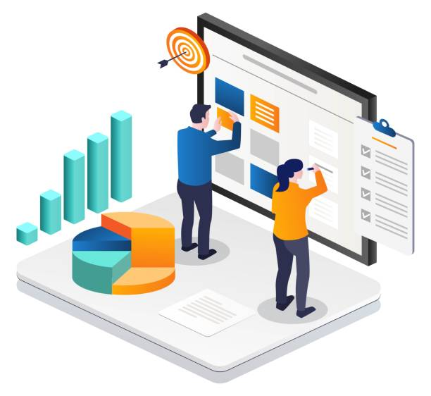
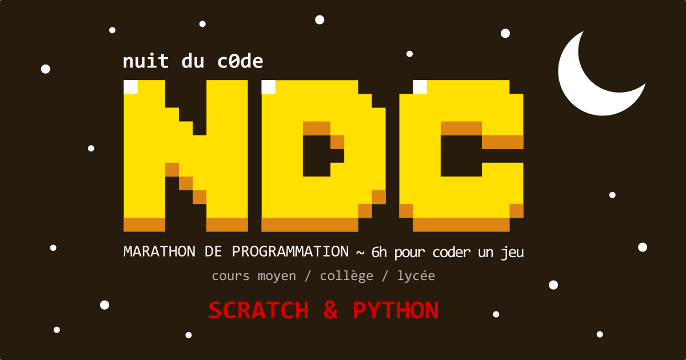

Le but de ce projet fut le tri de dépêches selon les mots qu’elles comportaient dans plusieurs catégories telles que le sport, la politique ou les sciences grâce à la conception et l’optimisation d’algorithmes en Java puis la création d’une synthèse à l’oral à notre professeur de développement.
Afin de réaliser ce projet nous avions dû former des binômes pour commencer la programmation. Nous disposions d’un PDF nous expliquant chacune des méthodes à implémenter et avions choisi dans notre groupe de les faire ensembles une à une afin d’être en accord sur l’objectif et sur la mise en forme de celles-ci. De plus, afin d’offrir le travail le plus complet à notre professeur, nous avons tenu tout du long un journal de bord relatant de nos faits accomplis mais aussi de nos erreurs de parcours. Nous avons ainsi pu commencer la programmation.
Mon rôle dans notre binôme à été dans un premier temps la création à la main puis automatique de dictionnaires puis pour la moitié des catégories afin de pouvoir attribuer pour chacun des mots des dépêches une note allant de 1 à 3 selon son degré d’appartenance à la catégorie en question. J’ai par la suite puis procédé à l’implémentation de méthodes dans le but d’attribuer aux dépêches leurs pourcentages d’appartenances à chacune des catégories. J’ai pu régler quelques erreurs logistiques telles que les erreurs de tris de notre algorithme ou la prise en compte de chiffres dans les dictionnaires de catégories. Enfin, j’ai puis optimisé la création de dictionnaires en n’incluant seulement les mots de plus de trois caractères mais aussi le temps d’exécution de notre algorithme en utilisant diverse algorithme de tris. Pour conclure, j’ai dû présenter une partie de notre travail à l’oral à notre professeur de Java.
Cette saé portait sur la compétence “Optimiser des applications informatiques”. J'ai comparer des algorithmes en utilisant des outils mathématiques pour l'informatique.
Au sein de cette sae effectuée en monôme, j’ai dû installer et paramétrer une machine virtuelle avec un système Debian 12, KDE, un JDK et git en utilisant des packages Debian ainsi que Intellij IDEA Community installés de 3 façons différentes. Nous avons eu 3 heures pour faire le travail demandé. Le rendu fut sous deux formes, premièrement sous forme de 10 captures d’écrans prises tout au long du projet puis dans un second temps sous la forme d’une carte mentale simple permettant à n’importe qui de pouvoir refaire cette installation chez lui.
Cette saé portait sur la compétence “Administrer des systèmes informatiques communicants complexes”. J’ai ici pu identifier les différents composants d’un système numérique et installer et configurer un système d’exploitation et des outils de développement.
Pendant cette sae effectuée en binôme, nous avons dû amasser des informations sur le naufrage du Titanic afin de présenter l’organisation du sauvetage ainsi que l’impossibilité logistique d’envisager de sauver davantage de passagers. Par la suite, nous avons dû en faire un schéma entité-association documenté.
Pour ce travail, nous avons décidé de travailler ensemble, nous avons donc regroupé des informations puis procédé à la présentation de celles-ci durant une mise en commun. Enfin, nous avons dû mettre au point un script de génération de notre base de données, un script de test et enfin un fichier sql des requêtes imposées par la sae. Pour se faire nous avons partagé égalitairement la base en deux permettant à chacun des membres du binôme de travailler de son côté pendant les vacances de noël.
Cette saé portait sur la compétence “Gérer des données de l’information”. J’ai pu interroger une base de données relationnelles, visualiser des données et concevoir une base de données à partir d’un cahier des charges.

Durant cette première grosse sae effectuée en groupe de trois, nous avons dû récupérer des informations sur de grandes ESN et les reformuler afin d’en faire un site internet à l’attention de jeunes collégiens.
Pour ce travail, nous avons décidé de nous partager la tâche de manière équitable, permettant aux plus rapides d’avancer sur le travail. Ainsi, de mon côté, j’ai dû concentrer des informations sur les moyens de financement, les clients et concurrents ainsi que la transition numérique et écologique mise en place par Capgemini.
Une fois ce travail terminé, nous avons dû faire un rendu sous forme de bilan expliquant l’activité de l’entreprise avec, dans un premier temps, les informations brutes trouvées directement sur leur site puis la reformulation de celles-ci. Par la suite, nous avons créé un wireframe permettant de visualiser notre futur site.
Chaque membre du groupe a dû se charger de la conception de deux pages du site puis de sa réalisation. Je me suis donc chargée de créer un fichier css permettant d’unifier notre travail, d’une page présentant l’entreprise, d’une autre montrant ses services proposés, mais aussi de la home page ainsi que du header et du footer . Enfin, nous avons dû présenter notre projet lors d’un oral de 5 minutes devant deux professeures de développement d’interface web et de communication lors duquel chacun a présenté les pages qu’il avait implémentées.
Cette saé portait sur la compétence “Conduire un projet”. J’ai ainsi pu mettre en place des outils de gestion de projet et identifier les processus présents dans une organisation en vue d'améliorer son système d’information.
Pour cette première sae du second semestre, nous avons dû explorer, nettoyer et transformer une base de données puis procéder à une étude de celle-ci sous forme de production de graphiques. Par groupe de deux, nous avons dû extraire les données utiles à notre étude sur une base de 7 Gio regroupant des données sur des millions de produits du nutricore. De notre côté, l'extraction concernait des fromages américains et a permis de dégager une base de données de 12 000 lignes. Pour ce faire, nous nous sommes mis d’accord sur les champs utiles au sein de la principale base de données, puis nous nous sommes partagé ces champs pour procéder à l'extraction des données. Une fois la base créée, nous l’avons nettoyée puis exportée sous format csv à l’attention de nos professeurs d’exploitation de bases de données. Par la suite, nous avons pu créer une étude en anglais de ces données avec l’utilisation de graphiques implémentés dans RStudio.
Cette saé portait sur la compétence “Gérer des données de l’information”. J’ai ainsi pu à nouveau mettre à jour et interroger une base de données, visualiser ces données, les optimiser et les manipuler en vue de stocker un ensemble volumineux de données hétérogènes.

Durant mon année de terminale j’ai pu participé à un tournoi se nommant La Nuit Du Code dont le but est de créer un jeu vidéo rétro en python en 6 heures. Ainsi j’ai été désignée comme étant la cheffe de mon équipe et j’ai dû la structurer afin de partager des tâches de manière équitable selon les atouts de chacun. J’ai aussi pu aider les membre de mon équipe lorsque cela s’imposait.